시스템 인프라 운영
Windows AD 정책
AD 서버에서 보안 정책을 생성한 뒤 대상 서버(OU)에 배포하는 방법입니다.
1. 그룹 정책 관리(gpmc.msc)에서 정책 생성
1-1. 정책(GPO) 만들기
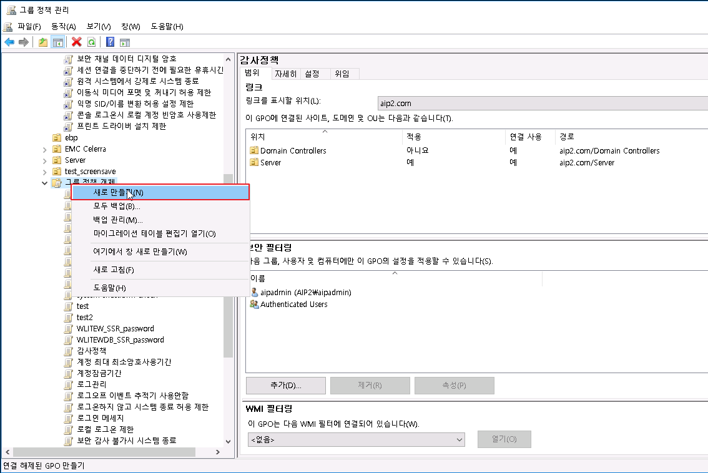
그룹 정책 개체에서 우클릭 → 새로 만들기
1-2. 정책 이름 입력
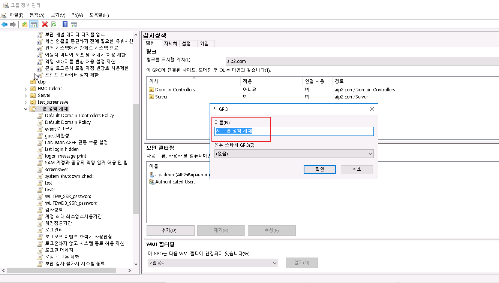
새 GPO 대화상자에서 정책 이름 입력
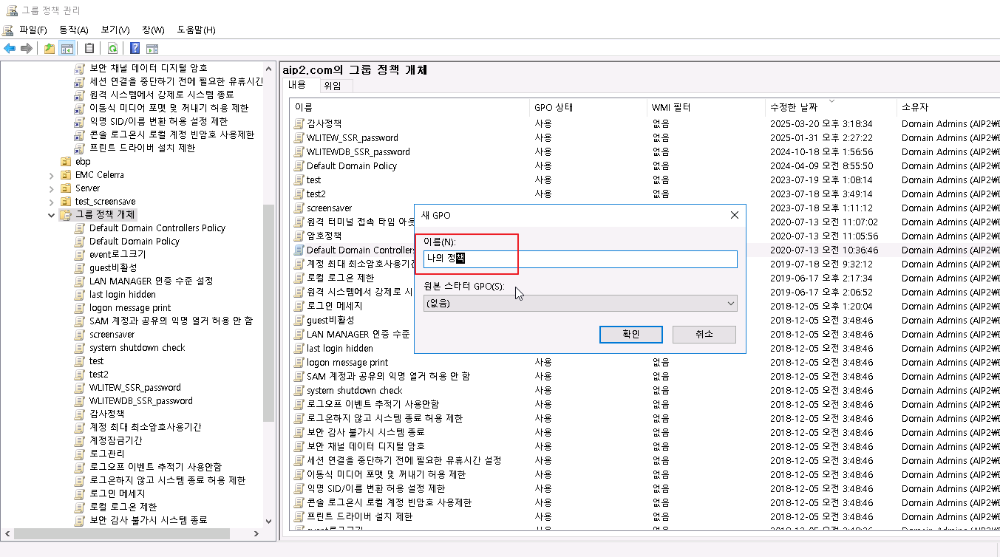
생성할 정책 이름 확인 후 확인
2. 만들 정책(GPO)에 보안 정책 적용
생성한 GPO를 선택한 뒤 편집기를 열어 보안 설정을 구성합니다.
3. GPO 편집
그룹 정책 관리 편집기 열기

생성한 GPO 우클릭 → 편집
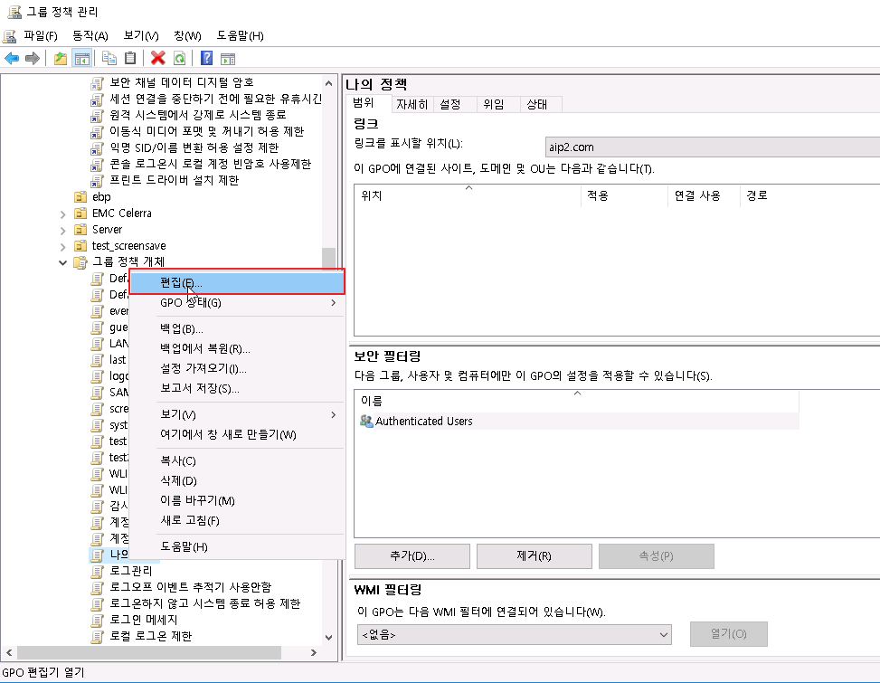
편집 메뉴 선택
보안 설정 구성
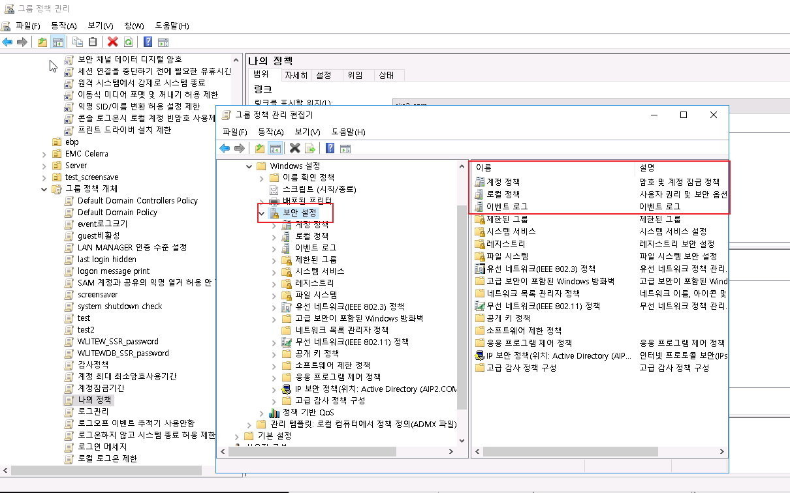
그룹 정책 관리 편집기에서 보안 설정 항목 구성

계정 정책, 로컬 정책 등 세부 보안 옵션 설정
4. 생성한 정책(GPO)를 서버(OU)에 적용
4-1. 적용할 서버(OU) 확인
실제 적용 대상 서버에서 아래 명령으로 OU 위치를 확인합니다.
dsquery computer -name %computername%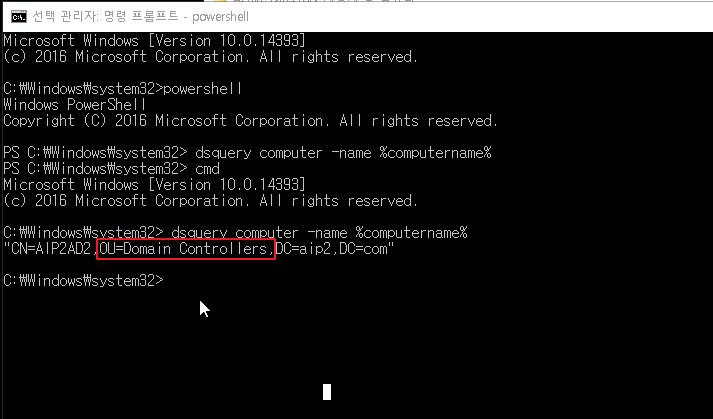
dsquery로 확인한 대상 서버의 OU (Domain Controllers)
4-2. 서버(OU)에 생성한 정책(GPO) 연결
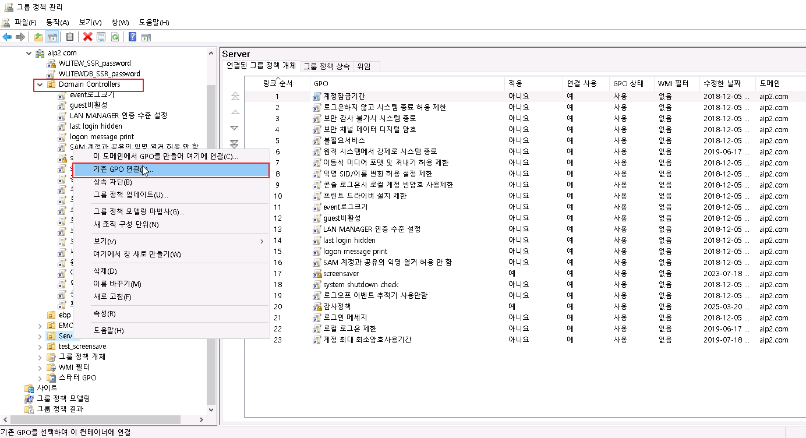
대상 OU 우클릭 → 기존 GPO 연결
4-3. 생성 정책(GPO) 선택
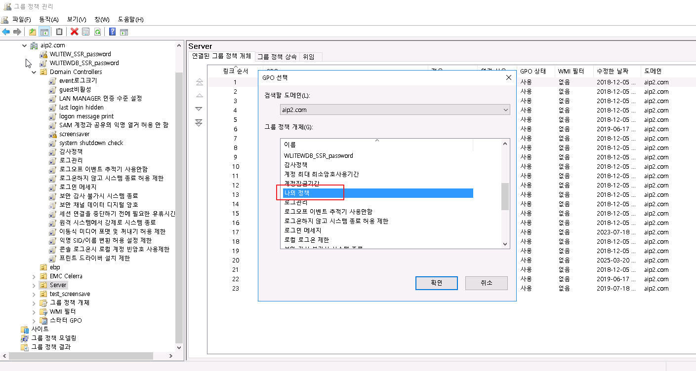
연결할 GPO 선택 (나의 정책)
4-4. 정책 상태 및 적용 설정
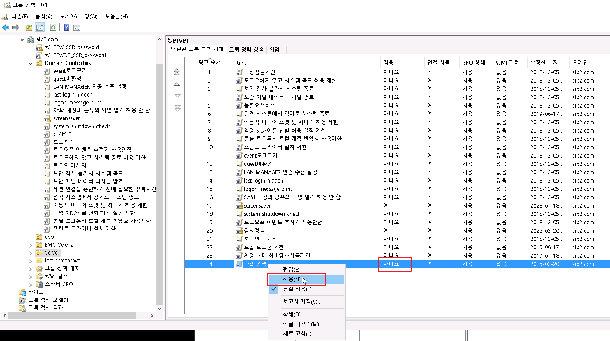
연결된 GPO에서 적용 여부 설정
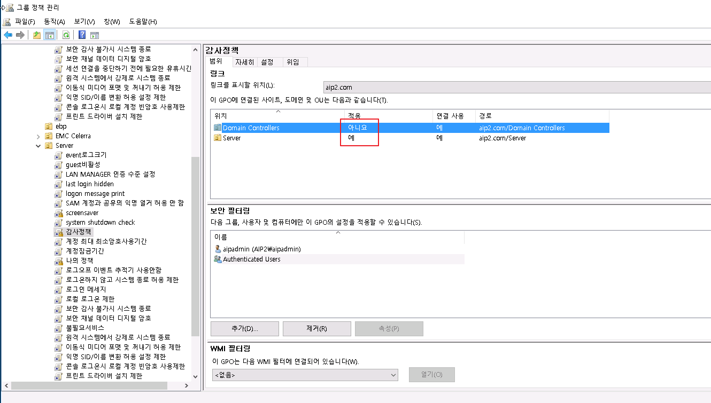
적용(아니요/예) 및 연결 사용 상태 확인
5. 정책 업데이트 및 확인
기본적으로 이중화된 AD ↔ AD는 5분 주기, AD ↔ 일반 도메인은 90분 주기로 자동 동기화됩니다. 즉시 적용이 필요하면 일반 도메인 서버에서 아래 명령을 실행합니다.
5-1. gpresult로 적용 상태 확인
gpresult /r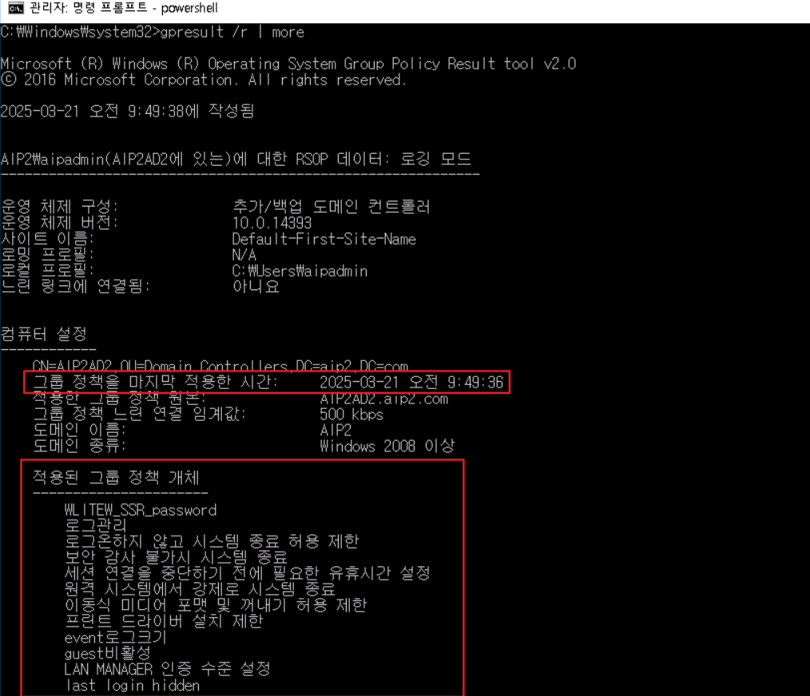
gpresult /r 로 적용된 그룹 정책 및 마지막 적용 시간 확인
5-2. gpresult HTML export
gpresult /h C:\gpresult.html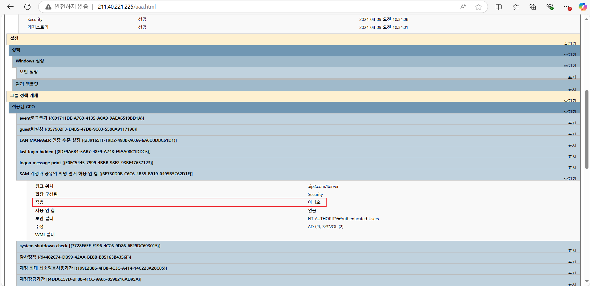
gpresult /h 로 export한 HTML 보고서 화면